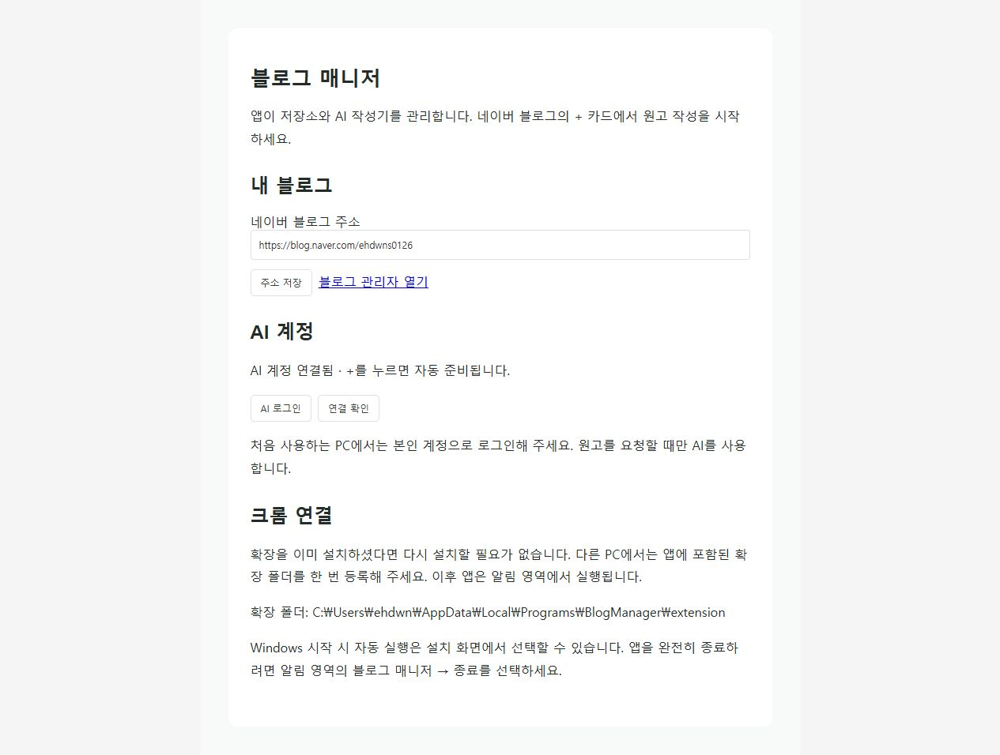
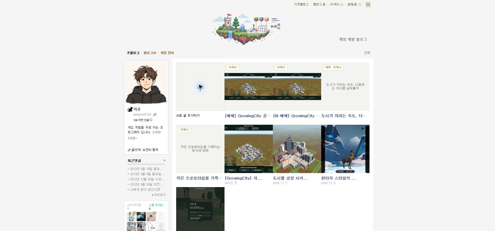

Tracefolio REPORTS & ISSUES
Tracefolio REPORTS & ISSUES미미로 블로그 매니저수정사항
Windows 설치형 앱과 AI 작성기 자동 준비
완료별도 CMD 실행을 제거하고 런타임 포함 설치 앱·사용자 원고 분리·AI 자동 준비를 실제 검증했습니다.
작업 결과
Windows 사용자 프로그램 경로에 설치했고 기존 초안 4개·게시글 4개를 보존했습니다. 실제 네이버 +에서 CMD 안내 대신 주제 입력창이 열렸고 설치 앱이 실제 AI 초안 1개를 생성했습니다.

변경 내용
적용 내용
- Node.js·공식 Codex CLI 포함 Windows x64 설치 EXE(159,834,412바이트). 개인 원고·로그인 정보는 포함하지 않습니다.
- 알림 영역 실행·중복 시작 방지·Windows 로그인 자동 실행. + 요청 때 AI 작성기를 자동 준비합니다.
- 프로그램 설치 경로와 사용자 원고 경로를 분리하고 기존 원고를 복사 보존했습니다.
- 블로그 주소·AI 계정 설정. 아카이브 URL은 특정 사용자 대신 GitHub Pages의 동일 프로젝트 보고서·자산 경로를 검증합니다.
- 설치 파일은 Git Chunk로 복원 가능하게 보관했습니다.


검증
- 전체 실행 회귀 검사 27/27 통과.
- 설치 파일 46개 해시 일치, Git 커밋의 런타임 파일39개가 설치 매니페스트와 일치.
- 중복 준비·초안 생성·잘못된 종료 토큰 거부·소유 작성기 종료: 모형 CLI로 실제 프로세스 연결 검증. 공식 CLI의 새 계정 경로에서는 미로그인 안내·작성기 미실행 확인.
- 설치된 공식 CLI의 기존 계정 연결 판별과 실제 예제 원고 생성 확인. 네이버 제출 없음.
- 사용자 초안4/게시글4 유지. 검증용 앱·작성기는 종료하고 사용자용 앱과 결과 탭은 유지.
- 자동 준비 검증 · 설치 검증 · Git 소스 일치
- SHA-256: 6C0AAB8BD3C5CCACD1D203166631FFD47F97D600575236A89AC671681DB8328C
- 소스 75fea07. 서버 파일의 최초 커밋 누락을 후속 커밋에서 보완한 뒤 전체 런타임 내용을 대조했습니다.
남은 사항
Chrome 확장은 개발용 배포이며 다른 PC에서 최초 한 번 등록해야 합니다. Chrome Web Store 배포·자동 업데이트는 등록하지 않았고 브라우저 설치 정책을 우회하지 않습니다. 신규 PC의 AI 로그인은 사용자가 앱 설정에서 진행합니다. 실제 네이버 공개 발행은 기존 원고 유지·검증 보류 요청대로 실행하지 않았습니다.
교훈 검토: 설치형 기능은 수동 CMD를 정상 사용 절차로 요구하지 않도록 프로젝트 AGENTS에 반영했습니다. 전역 지침은 기존 설치·검증 규칙과 중복되어 변경하지 않았습니다.
작업 시간
- 제안 시간: 20~35분
- 실제로 완료된 시간: 시작 2026-11-08 15:50:34 Asia/Seoul. 설치·실행·소스 확인 종료 2026-11-08 16:13:43 Asia/Seoul. 공개 배포 확인 소요는 최종 결과에서 구분합니다.
- XERJ: 미사용 — XERJ 도구 미제공. rg·소스·실제 HTTP/CLI·브라우저 화면으로 검증했습니다.